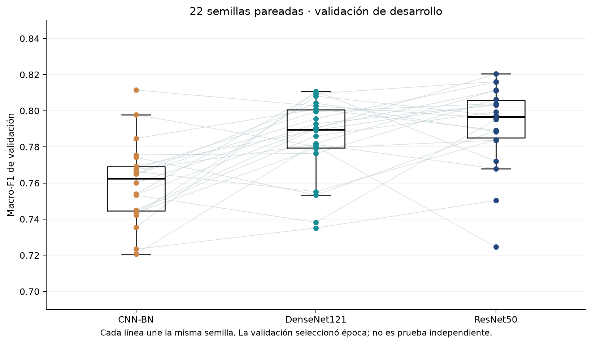

Entregable 2 · 11 noviembre 2026 · 22 semillas por modelo
| Modelo | Macro-F1 | DE | IC95 |
|---|---|---|---|
| softmaxcnn_bn | 0.7600 | 0.0219 | 0.7503 – 0.7697 |
| densenet121 | 0.7846 | 0.0217 | 0.7750 – 0.7942 |
| resnet50 | 0.7922 | 0.0227 | 0.7822 – 0.8023 |

| Comparación | Δ F1 | t + Holm | Wilcoxon + Holm | Permutación + Holm |
|---|---|---|---|---|
| resnet50 - densenet121 | 0.0077 | 0.17452 | 0.12888 | 0.17496 |
| resnet50 - softmaxcnn_bn | 0.0322 | 0.00067846 | 0.0010858 | 0.00138 |
| densenet121 - softmaxcnn_bn | 0.0246 | 0.0010475 | 0.0016184 | 0.00138 |
ResNet50 tiene el mayor promedio, pero no se distingue estadísticamente de DenseNet121 entre semillas. Ambos superan a CNN-BN en este análisis de desarrollo. Ausencia de significación no demuestra equivalencia.
Para una mejora relevante de 0,02, los escenarios basados en las dispersiones observadas exigen aproximadamente 26–43 pares con control conservador de diez comparaciones y 80% de potencia. Esto no sustituye el piloto de los modelos adicionales.
31 resultados individuales nuevos verificados por hash; 35 anteriores referenciados en el índice. Reserva no evaluada en esta continuación. Faltan predicciones antiguas alineadas para análisis completo por paciente. El cuaderno nuevo incluye su exportación sin entrenamiento adicional.
Detalle reproducible: analisis_completo.json, contrastes_pareados.csv, omnibus.json, nemenyi.csv y el informe adjunto.